[SH4] You Yourself Who Ended Up in the Room
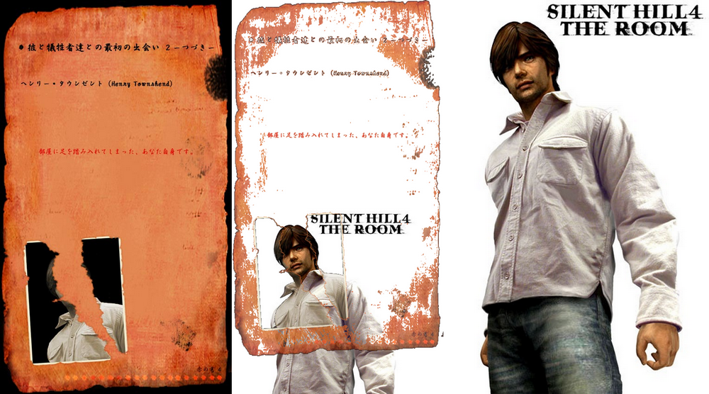
Another Crimson Tone "The First Encounter Between Him and the Victims"
This is a mirror of the DeviantArt version linked above, provided as a backup and for easier access.

Long ago, the Japanese official websites also included background details that never appeared directly in the game itself.
One of the most well-known examples is the information about Walter's victims. On the pre-release puzzle site "SH2004 . com," files up to the 15th victim were posted, while the 16th through 21st victims, whose cases occur in the game, were posted on the official site as "The first encounter between him and the victims."
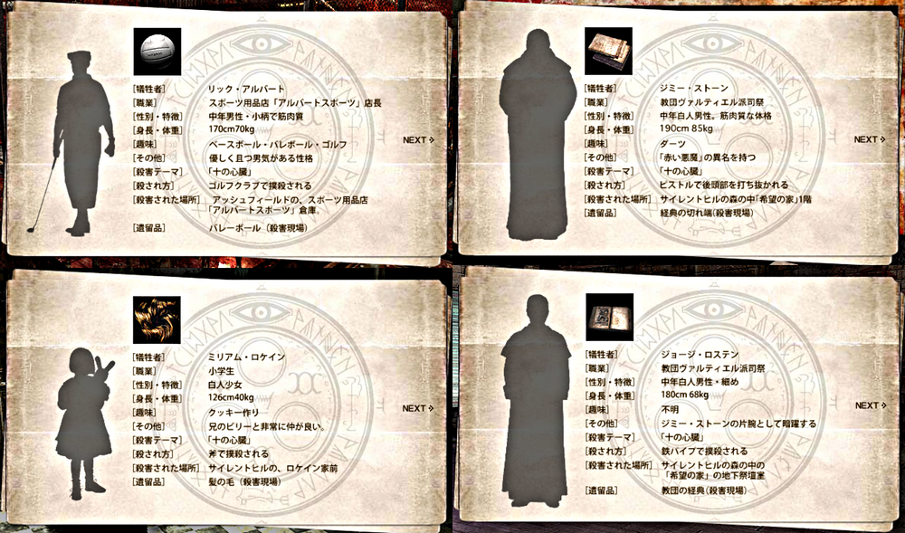
But for some reason, in English-speaking regions there were victim files for the 16th through 21st that don't exist in Japanese, with details like height, weight, and hobbies all written out, so I thought "???" and when I looked into it, it turned out that a now-defunct fan translation site had created fan-made data that ended up circulating as if it were official in English-speaking communities. ...I've mentioned this before.


✅ Now, this time it's about the official "Another Crimson Tone" information.
https://web.archive.org/web/20070711151449/http://www.konami.jp/gs/game/sh4/roomr_ex01-1.html
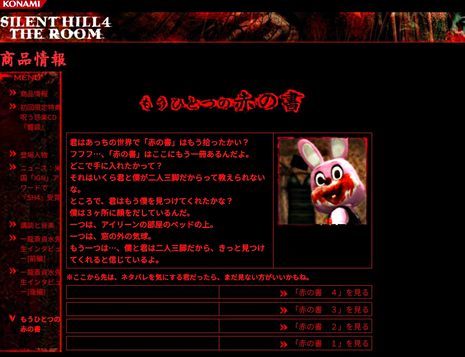
This was a section introduced by Robbie the Rabbit (Robbie-kun), and it included not only the victims' data "The first encounter between him and the victims," but also things like how to read the game results, branching conditions for endings, hidden elements, weapons and ways of fighting, and even explanations of the setting.
In the description of the apartment where the story takes place, it says "owner and superintendent," so it might mean that Frank is the owner.
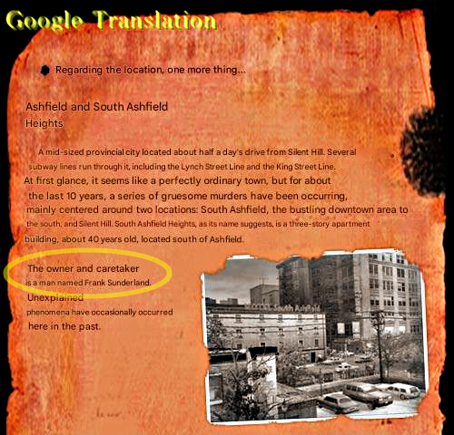
As for the victims, it described how they encountered Walter, or rather, what led to them being targeted.
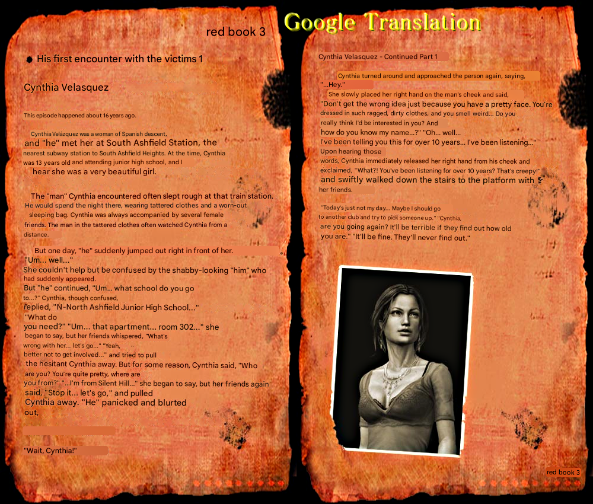
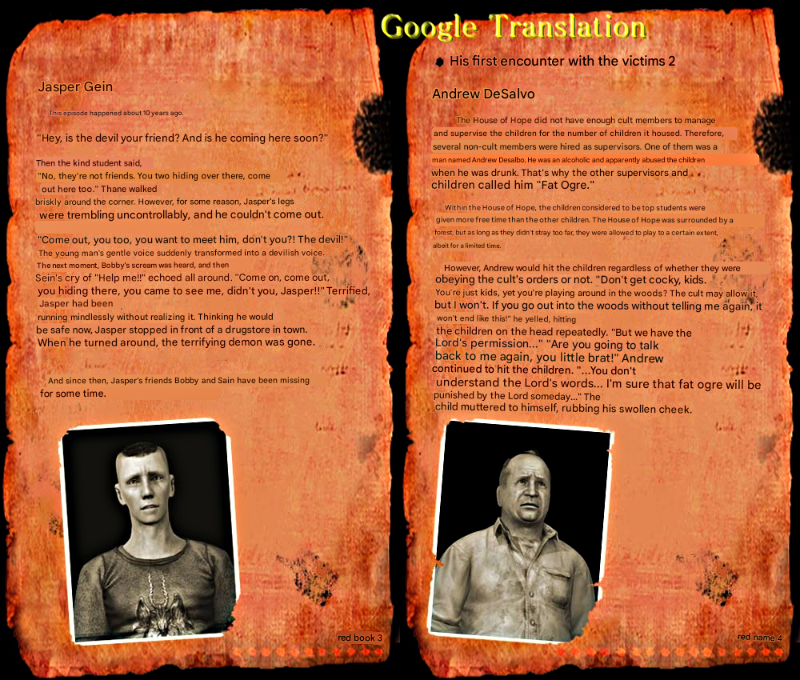
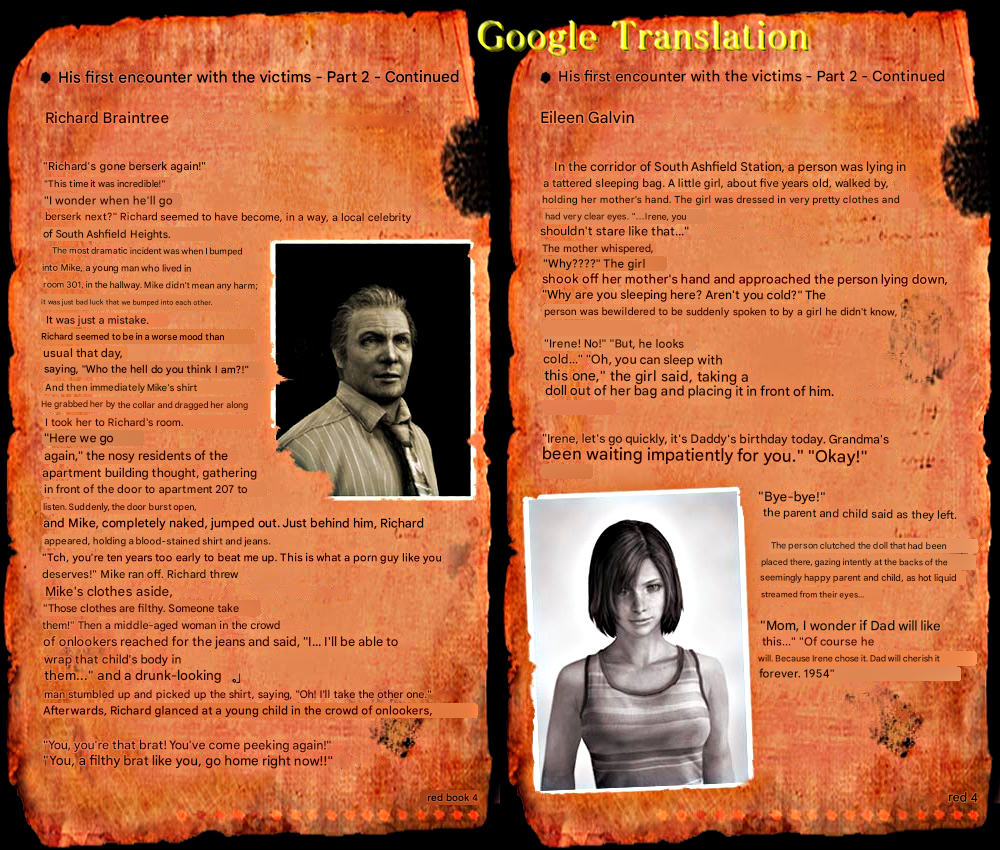
Some of them were quite unfair.
But for the last one, Henry, it simply says, "You yourself, who ended up stepping into the room." That's all. You get caught up in it without even knowing the trigger.
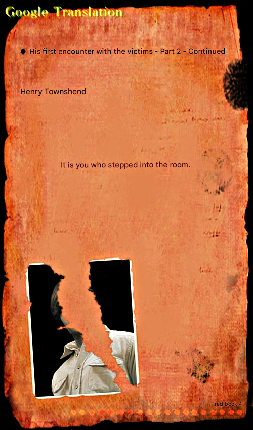
Looking at the photos in his room, you can see that Henry visited Silent Hill many times from childhood into adulthood, so fans used to speculate that maybe he happened to encounter Walter there.
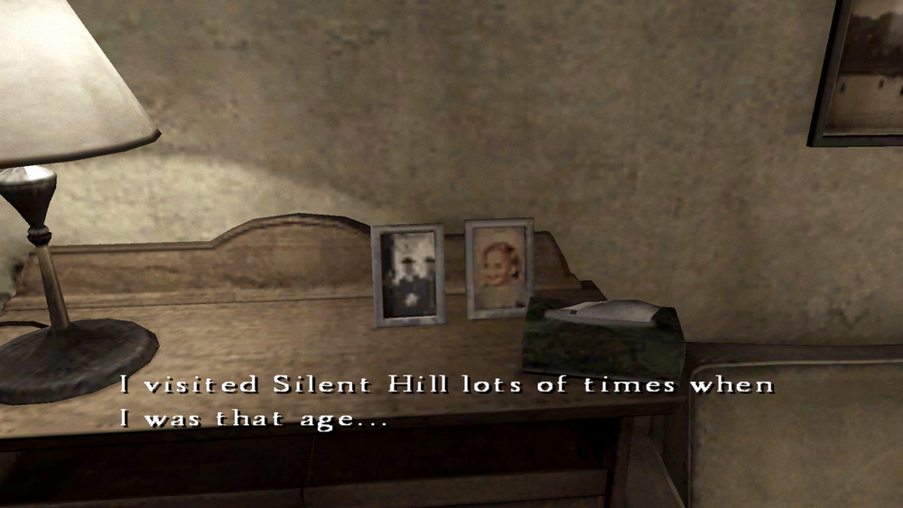
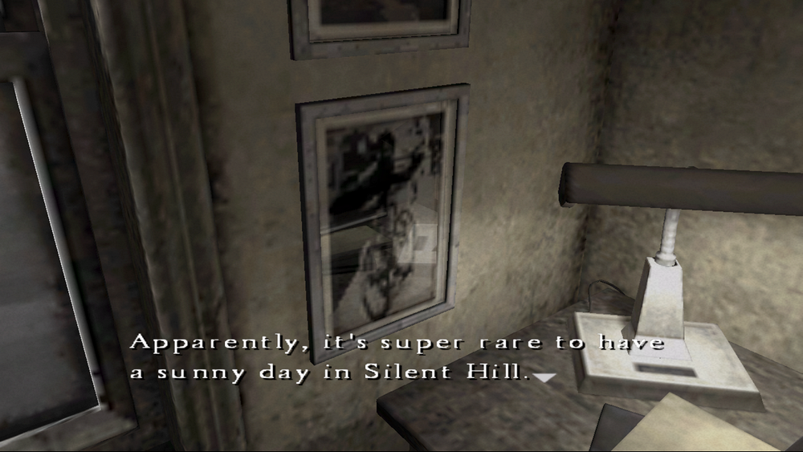
✅ And from here, it's time for some verification!
I think many people have already looked into this, but I naturally looked for the original of this torn photo as well.
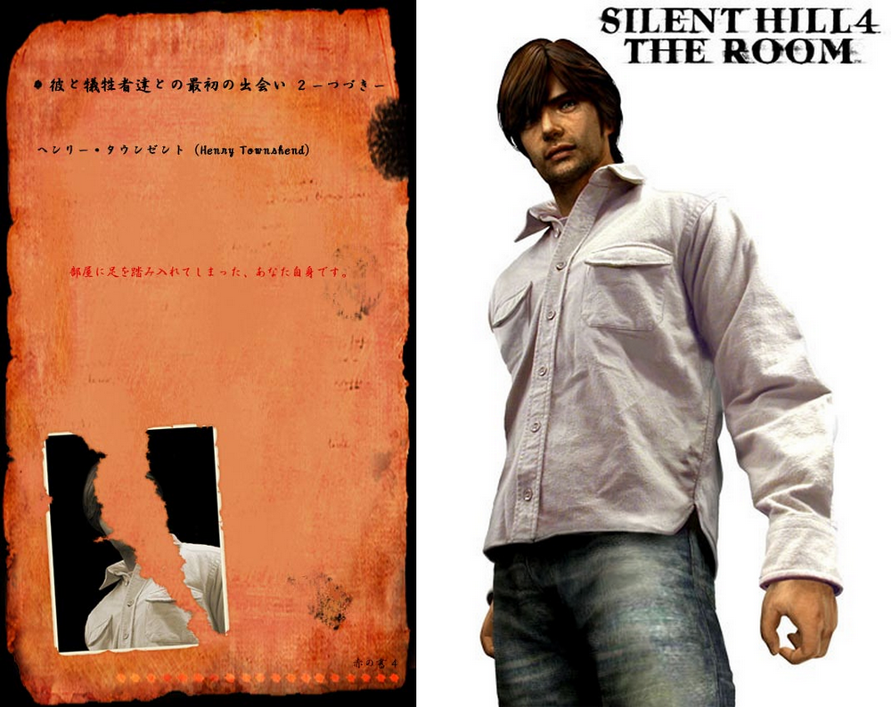
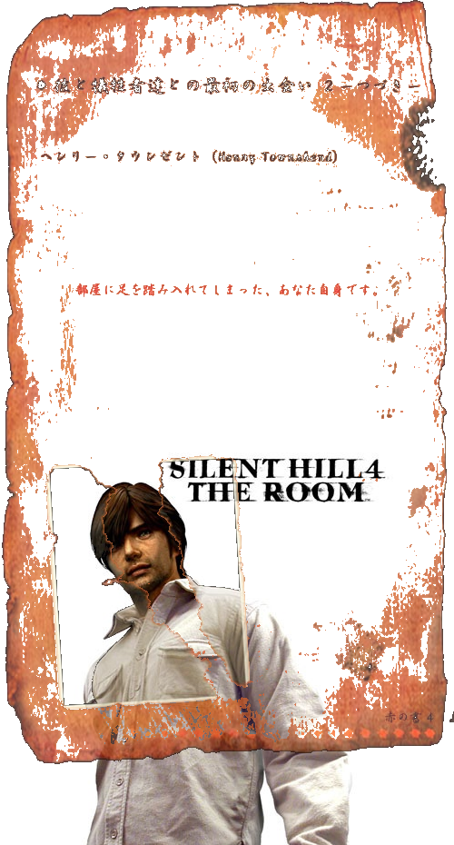
I'm pretty sure the image is based on this concept art, but the shoulders and the shirt buttons don't match.
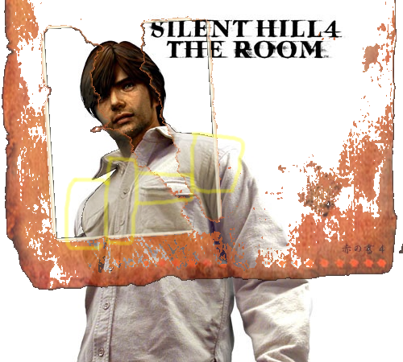
When aligned with the left pocket, the right side shifts significantly.
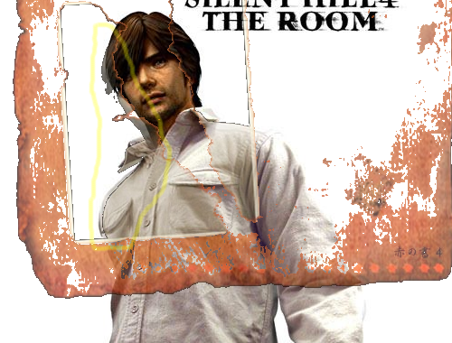
So what?
Probably because even for a cut-out photo style image with the face removed, they didn't just cut it out but adjusted things like the overall balance. It's meticulous work!
Even from a single photo like this on the official site, you can tell how much care went into making it. It made me feel their love for the fans who were looking at the site with excitement, and it made me feel nostalgic.